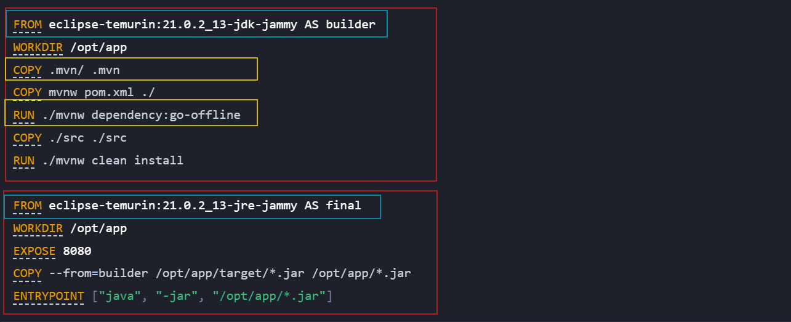
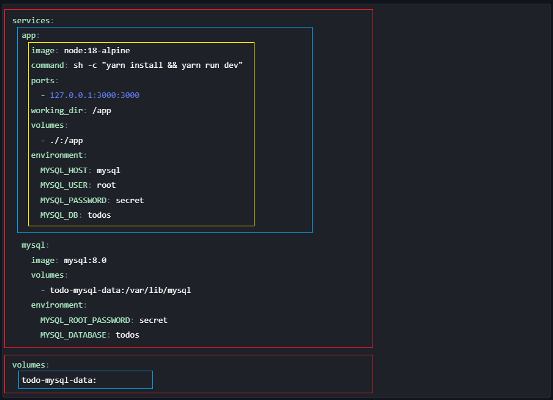

Docker Tutorial#
目錄#
什麼是 Docker 與 Docker 基礎概念#
什麼是 Docker#
Docker 的定位很接近虛擬機(Virtual Machine)，它提供一個輕量級、隔離的環境，可用來編譯原始碼、執行應用程式、進行測試等。不過相較於傳統的虛擬機，Docker 更加輕量，對系統資源的負擔也較小（因為與 host 共用 kernel），而且部署與使用方式也相對簡單。
Docker 有幾個重要的基本概念：
Image
Container
Volume
Network
Image#
Image 可以想像成系統的快照，封裝了執行環境所需的所有依賴與設定，能夠重現特定的執行狀態。比較重要的特點是 Image 是唯讀的檔案，只能整體重建，不能做部分修改。
Image 相關指令#
1docker images --help
2docker image rmi --help
Container#
Container 是 Image 的實體化，兩者的關係就像物件導向裡的類別與實體的關係。
舉例來說，ubuntu 是一個 Image，我們可以透過 docker run -it ubuntu 來啟動一個基於該 Image 的 Container。
Container 相關指令#
1docker ps --help
2docker run --help
3 -it, -d, -p, -e, -P, --env-file, --mount
4docker stop --help
5docker start --help
6docker exec --help
7docker create --help
8docker rm --help
9 -f
Docker Volume#
Docker Volume 的設計是為了讓 Container 可以持久化儲存資料。由於 Image 本身是唯讀的，若程式會產生資料（例如資料庫的儲存檔），這些資料應該被存放在 Volume 中，才能在 Container 停止或刪除後仍保留。
Docker Volume 相關指令#
1docker volume create --help
2docker volume ls --help
3docker volume rm --help
4docker volume prune --help
Docker Network#
Docker Network 允許 Container 之間的網路溝通，並與 Host 的網路隔離。這樣設計有助於提高安全性與可管理性，也能支援多 Container 應用部署架構（如微服務）。
Docker Network 相關指令#
1docker network ls --help
2docker network create --help
3docker network inspect --help
Image 管理#
要啟動 container 之前必須先有一個 image 。要如何建立 image ? 可以使用指令來建立，也可以從網路上的 Registry 取得現成的 image 。
快照指令#
我們可以使用指令將執行中的 container 快照下來，轉換成一個新的 image。
1docker commit --help
Dockerfile#
我們使用指令可以搭配 Dockerfile 來建立。Dockerfile 就像是個食譜，用來描述要如何建立一個 image 。
Dockerfile 相關指令#
1docker build --help
2 -t, --target, --no-cache
Registry#
若將 Dockerfile 想像成建構 Image 的食譜，那 Registry 就是存放各種已建構好 Image 的倉庫。
最常見的 Registry 是 Docker Hub，我們可以從中搜尋、下載，甚至推送自定義的 image。
在實務上我們可能會用 git repository 去對單一食譜做版本控制。我們通常會搭配 tag 機制，將相同應用的不同版本清楚標示在 Registry 中，方便團隊或使用者拉取特定版本的 Image。
Registry 相關指令#
1docker tag --help
2
3docker search --help
4docker pull --help
5docker push --help
Dockerfile 介紹#
標準的 Dockerfile 架構有下面幾個部分
Stage (如下圖紅色框框部分)
Base Image (如下圖藍色框框部分)
Layer (如下圖黃色框框部分)

Layer#
每一個 Layer 會對應到建構環境要使用的操作指令，例如 RUN, ENV, ARG, USER 等。有哪些指令以及各自的功能可以參考 Dockerfile reference 。
在建構過程中，Docker 會為每個 Layer 建立 cache，以便在下次建構時重複使用未改變的層級，加快建構速度。 Docker 在 build 的時候會自動檢查是否可以套用 cache 來加快速度，但如果想要強制不使用 cache 的話可以在 build 指令加入 OPTIONS 或者直接使用指令把 cache 清除之後再重建。
Cache 相關指令#
1docker builder prune --help
Base Image#
每個 Stage 都需指定一個 Base Image，作為該階段的基礎執行環境。它實際上是最底層的一個 Layer，後續的 Layer 都是在此基礎上進行修改與擴充。
Stage#
Dockerfile 的 stage 主要是將 image 的建構分階段。每一個階段都可以是一個獨立的 image ，但預設只有最後一個 stage 的 image 會被產生。
會使用 multi-stage 的原因通常是因為要精簡 image 的 size 。下面是一個官方提供的範例:
你要從原始碼開始搭建一個實際運行的 container ，因此需要先做編譯，接著再佈署。 有些工具是只有在編譯時有需要但執行時不需要。例如編譯 c 與 c++ 程式的 gcc 、 編譯 Java 的 JDK。因此可以在 stage 1 安裝這些工具並且執行編譯，接著在 stage 2 使用 COPY 指令把 stage 1 編譯出來的結果複製進來並安裝相關會使用到的工具。
docker-compose.yml 介紹#
在官方的 turtioral 裡面有提到，每一個 container 應該要努力做好一件小事，而不是完成一件大事。最簡單的例子就是架設一個 web 網站。通常 web 網站最少會需要一個前後端 server 以及一個 資料庫。 官方建議將功能拆分成多個 Container，每個 Container 各自負責單一職責，例如前端伺服器與資料庫分別運作於不同 Container 中。但如果要這樣做的話會有一個問題是不同 Container 之間的通訊要自己手動設定，這是個麻煩且容易出錯的工作。在這個使用場景之下可以使用 Docker Compose 來解決這個問題。
經典的 docker-compose.yml 的結構有以下部分
類別定義 (下圖紅色框部分)
物件定義 (下圖藍色框部分)
屬性定義 (下圖黃色框部分)

類別定義#
這些定義會對應到常見的 Docker 資源類別。例如：
services對應到docker containervolumes對應到docker volumenetworks對應到docker network
其他可定義的類別如下
networks
configs
secrets
name
profiles
extensions (x-…)
物件定義#
根據類別定義出實體，例如圖片上的 services 類別裡面會有 app 與 mysql 兩個物件，這兩個物件會對應到兩個獨立的 container 。而 volumes 類別裡面的 todo-mysql-data 則是對應到一個 Docker Volume。
屬性定義#
這些屬性定義對應的是你使用 docker run 或 docker volume create 指令時所指定的的 OPTIONS 。用來設定物件的設定。
Docker Compose 相關指令#
1docker compose up --help
2 --build, -d
3docker compose run --help
4docker compose start --help
5docker compose down --help
6docker compose build --help
7 -build-arg
進階觀念#
Container 的 mount#
container 的 mount 有兩種模式
mount
Docker Volumebind mount
第一種方式就如名稱所示，是把指定的路徑綁訂到某個 Docker Volume 上。
第二種方式則是類似建立一個捷徑把 container 指定的路徑連接到 host 的指定路徑。
常見的使用場景如下:
將 project directory 綁訂到 container 某個路徑下面
將 ~/.git 的設定綁訂到 container 的 ${HOME_DIR}/.git 或 /root/.git 下面
將 ~/.ssh 的設定綁訂到 container 的 ${HOME_DIR}/.ssh 或 /root/.ssh 下面
在使用 docker run 的時候可以使用 -v <source>:<target>[:<mode>] 的 OPTION 來指定 mount 。預設狀況是使用 mount Docker Volume 的方式去解讀，但如果 source 是使用絕對路徑 (不可以使用相對路徑)來描述的話會視作為 bind mount 。
docker-compose 的 network#
前面的介紹有提到，使用 Docker Compose 的目的是要隔離大型應用的每一個部分，但 container 之間又要能互相通訊。這實際上是依靠建立 Docker Network 並且在 docker run 的時候使用 --network <network> 把所有的 container 連接到同一個網路來解決。如果使用了 Docker Compose 的方式的話在執行的時候 Docker 會自動建立一個對應的的 bridge 網路 <project_name>_default 。沒有指定網路設定的 service 預設就會連接到這個網路因此可以互相通訊，但如果有指定網路的 service 如果沒有指定到同一個網路的話彼此之間就無法通訊。
Docker security#
Docker 啟動的步驟以及安全機制#
由 Docker Engine 呼叫
containerd，再透過runc建立 containerDocker 使用 containerd 作為 container 執行與生命週期管理的中介，再透過符合 OCI 標準的 runtime (預設為 runc ) 來啟動實際的 container process。
建立 Linux namespaces，隔離 container 資源，包括:
Process
Network
File system
User
IPC
根據 image 的 layer 結構，使用 overlay filesystem 組合成 container 的 root filesystem，同時根據 volumes 或 bind mounts 的設定，將指定的目錄掛載至 container 內的對應路徑。
使用 Linux 的
cgroups限制 CPU / Memory 使用量使用 Linux 的
seccomp屏蔽高風險的systemcall
Docker 之所以能提供相對安全的執行環境，主要是因為在啟動 container 時，會為 container 的各項資源建立獨立的 Linux namespaces，使其運作與 host 系統相互隔離。
Docker 的安全隱患#
在未啟用 User Namespace Remapping 的情況下， container 內部的 root 使用者（UID 0）在 host 上也是真正的 root，兩者幾乎擁有相同權限。
雖然 Docker 預設會移除一些高風險的 Linux capabilities（例如 CAP_SYS_ADMIN, CAP_NET_ADMIN），因此 container 內的 root 無法執行某些操作（如掛載檔案系統、修改網路介面等），但這仍無法完全避免風險。若在 docker run 的時候加上了 --privileged OPTION，則 container 將會被賦予所有 capabilities，並解除 AppArmor、seccomp 等限制。此時 container 內的 root 就與 host 的 root 幾乎無異，擁有完整權限。這代表 container 中的 process 可以掛載 host 上的檔案系統，例如將 /root 或 /etc 掛載進 container 中，造成系統安全重大風險。
Linux capabilities 與 Docker 權限控制#
在某些情況下，應用程式可能需要執行系統層級的操作，例如修改網路設定、調整系統時間，或掛載檔案系統。傳統的 Linux 權限模型僅有一個超級使用者 root ，因此若要執行上述操作，通常必須以 root 權限執行程式，這容易導致權限過度開放與安全風險。
從 Linux 2.2 開始，系統引入了 Linux Capabilities 機制，將原本屬於 root 的權限細分為多個 能力模組(capabilities)。我們可以將特定的 capability 授予某個 process，使其能執行特定的系統操作，而不需要完整的 root 權限。例如，CAP_NET_ADMIN 允許修改網路設定，CAP_SYS_TIME 允許修改系統時間等。
這些 capability 是附加在 process 上，執行檔雖可透過 setcap 指定 capability，但最終生效的是執行時的 process。詳細說明可參考官方文件：capabilities(7) — Linux manual page 。
當使用 docker run 啟動 container 的時候，如果加上 --cap-add 的 OPTION 的話 container 的 process 會被賦予對應的 capability 。在 container 裡面 fork 的任何 process 都會自動繼承這些 capabilities 。因此，透過該選項賦予的 capability 將套用至整個 container 中所有的 process。
Linux Capabilities 相關指令#
1setcap --help
2getcap --help
3
4getpcaps --help
5man capsh
接下來?#
這篇文章的主要目的是幫助你理解如何閱讀與理解別人的 Dockerfile 和 docker-compose.yml。在不同的應用場景中，會需要不同的設定方式；即使是相同的需求，也可能有多種實現方式，因此學會閱讀別人的設定檔，能幫助你更快上手與應變。
接下來的建議學習方式是：找一些實際的 Dockerfile 和 docker-compose.yml 範例，動手分析它們的寫法與用途，觀察各種指令與欄位的使用差異，並試著親自執行看看。
如果在過程中遇到不懂的設定項目或指令，不妨善用像是 ChatGPT 這類 AI 工具，或參考官方文件來查詢說明。透過大量實作與查詢，會讓你越來越熟悉 Docker 的生態與使用習慣。